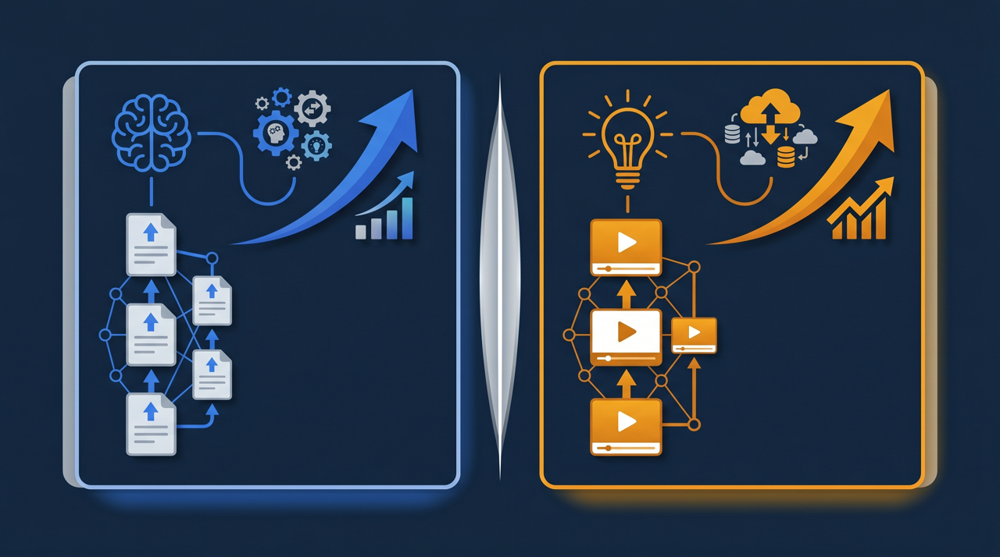
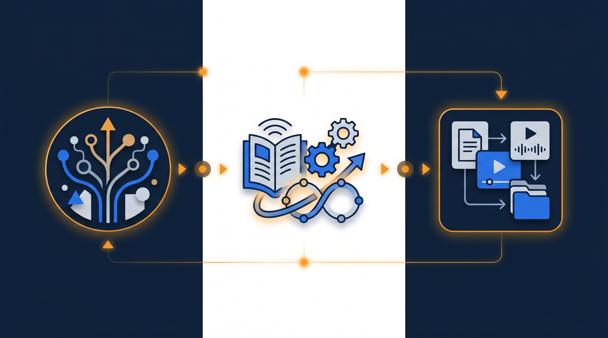

「同じ作業なのに、教える人によって出来上がりが違う」——そんな状態に心当たりはありませんか。教え方も、到達点も、人それぞれ。これでは新人が誰に教わったかで実力が変わってしまいます。この記事では、教える内容と基準を社内で揃える「教育の標準化」とは何か、それが業務品質と生産性をどう押し上げるのかを、現場目線で整理します。

教育の標準化とは？まず言葉を整理する
教育の標準化とは、教える内容・教える順番・到達の基準を社内で揃え、誰が担当しても同じ水準で人を育てられるようにする取り組みのことです。もう少しかみくだくと、「Aさんが教えても、Bさんが教えても、新人が同じところまで到達できる状態」を目指す、ということなんです。
多くの会社では、教育は現場の先輩に任されています。これ自体は悪いことではありません。ただ、任せきりにしていると、教える中身が人によって変わってきます。ある人は基本から丁寧に教え、ある人は「見て覚えて」で済ませる。ある人は安全確認を最初に教え、ある人は後回しにする。こうなると、新人がどこまでできるようになるかは、誰に当たったかで決まってしまうわけです。これでは安定した品質を保てませんよね。
ここで整理しておきたいのが、標準化と「やり方を1つに縛ること」は違う、という点です。標準化が揃えるのは、あくまで土台になる部分——教える内容・順番・修了の基準です。その上にある応用や、個々のお客様に合わせた工夫まで、すべてを1つに固める必要はありません。たとえば接客の現場で、お客様への基本のあいさつや確認事項は揃えるけれど、その先の会話の運び方は各自の持ち味に任せる、といった具合です。土台を揃えるからこそ、応用に集中できる。標準化はそういう発想に立っています。
厚生労働省の能力開発基本調査でも、計画的なOJTやOFF-JTの実施は人材育成の中心に位置づけられています。けれど「実施している」ことと「同じ水準で実施できている」ことの間には、けっこうな開きがあるものです。その開きを埋めるのが、教育の標準化だと考えると分かりやすいと思います。
なぜ教育はバラついてしまうのか
そもそも、どうして教育は放っておくとバラつくのでしょうか。現場を見ていると、原因はいくつかのパターンに整理できます。
1. 「何を、どこまで教えるか」が決まっていない
一番多いのがこれです。教える項目のリストや、到達の基準が文書になっていない。だから教える側は、自分の経験を頼りに「だいたいこのくらい」で教えます。基準が頭の中にしかないので、人によってゴールラインがずれる。ある先輩のもとでは合格だった作業が、別の先輩から見ると不十分、ということが起きるわけです。
2. 教える順番が個人任せになっている
同じ内容でも、教える順番が違うと理解のしやすさが変わります。前提となる知識を先に教えるか後に回すかで、新人のつまずき方も変わってきます。順番が決まっていないと、教える人の「いつものクセ」で進むので、効率の良い順番にならないことも多いんです。
3. 教えた結果を確認していない
教えっぱなしで、理解できたかを測っていない現場は少なくありません。これだと、できているように見えて実は分かっていない、という状態を見逃します。確認の基準がないので、「教えた」と「できるようになった」がイコールで扱われてしまう。ここがズレていると、後工程でミスが出てから初めて気づくことになります。
実際にあった例を挙げます。ある製造現場で、同じ検査工程を3人の先輩が新人に教えていました。ところが不良の見逃し率が、教わった先輩によってはっきり差が出ていたんです。調べてみると、一人は「ここを見ろ」というチェックポイントを口頭で全部伝えていたのに、別の一人は「慣れれば分かる」で済ませていた。教える内容が揃っていなかったわけです。チェックポイントを一覧にして全員で共有したところ、誰に教わっても見逃し率がそろってきた、という流れでした。バラつきの正体は、たいてい「揃えていないから」に行き着きます。

標準化されていない教育が招くこと
教育のバラつきを「個性」と捉えてしまうと、対策が後手に回ります。実際には、組織にじわじわとコストをかけている状態であることが多いんです。代表的なものを挙げてみます。
- 新人の到達レベルが教える人によって変わり、業務品質が安定しない
- 教え直し・確認・やり直しが増え、現場の時間が削られる
- ベテランが毎回ゼロから同じ説明をし、本来の業務に集中できない
- 「誰に聞けばいいか」が人によって違い、新人の立ち上がりが遅れる
- 教育担当が辞めると、その人のやり方ごと教育が止まってしまう
特に見落とされやすいのが、品質のバラつきが「後工程のコスト」になって表れる点です。教育段階での1つの伝え漏れが、現場での確認やクレーム対応、やり直しという形で何倍にもなって返ってくる。教育のバラつきは、教育の場だけで完結する問題ではないんですね。
もう少し身近な場面で考えてみましょう。新人が2人入ったとします。1人は基準を全部教わったベテランのもとで育ち、もう1人は「とりあえずやってみて」型の先輩のもとで育った。半年後、同じ業務をしても、片方はミスが少なく、片方は確認が必要な状態が続く。本人の能力差ではなく、教わり方の差です。けれど評価の場では、つい本人の差として見られてしまう。これは新人にとっても不公平ですし、会社にとっても、本来なら防げたはずの差を抱え込むことになります。J-Net21などの中小企業向けの情報でも、人材育成と生産性向上は繰り返し経営課題として取り上げられていますが、その土台に教育のバラつきがあることは少なくありません。
教育を標準化する4つのステップ
では、具体的にどう進めればいいのでしょうか。一気に全業務を標準化しようとすると挫折しやすいので、次の4ステップで小さく始めるのがおすすめです。
ステップ1：標準化する業務を1つ選ぶ
最初から全部を対象にしないことが続けるコツです。「新人が毎回つまずく作業」「担当者によって成果が大きく変わる業務」を1つだけ選びます。範囲を絞ると関わる人も少なく、短期間で効果が見えるので、社内の納得も得やすくなります。いきなり完璧な体系を作ろうとせず、1つの業務でうまくいったら横に広げる、という進め方が現実的です。
ステップ2：教える内容と順番を書き出す
選んだ業務について、「何を、どの順番で教えるか」を一覧にします。このとき、複数のベテランから聞き取ると、人によって教えている内容が違うことが見えてきます。その差こそが、これまでバラつきを生んでいた正体です。良いところを拾い集めて、一本の流れにまとめていきます。厚生労働省の職業能力評価基準のように、職種ごとに求められる能力を整理した公式のものさしを参考にすると、抜け漏れを減らす助けになります。
ステップ3：到達の基準を決める
「ここまでできたら一人前」というラインを決めます。あいまいな「だいたいできる」ではなく、「この作業を、この時間内に、このチェック項目を満たして完了できる」といった具体的な形にするのがポイントです。基準が言葉になっていれば、誰が見ても合否を判断できるようになり、教える人による合格ラインのズレがなくなっていきます。
ステップ4：確認テストと振り返りをセットにする
教えて終わり、にしないことが定着の分かれ目です。理解できたかを測る簡単な確認テストを用意し、つまずいた箇所が分かれば、その部分の教え方を足していく。作って、使って、直すを回していくと、標準化された教育の中身そのものが、使うほど良くなっていきます。
動画とLMSで標準化を「維持できる仕組み」にする
ここまでの作業は、紙のマニュアルや一覧表でもある程度は進められます。ただ、文書だけだと「動き」や「間の取り方」といったコツが伝わりにくく、しかも教材があちこちに散らばって、結局どこにあるか分からなくなりがちです。そうなると、せっかく揃えた基準もなし崩しになり、また属人化に戻ってしまう。これではもったいないですよね。
そこで効いてくるのが、動画と学習管理システム（LMS）の組み合わせです。動画は、手元の動きや確認のタイミング、声かけの仕方といった、文章にしづらい部分をそのまま見せられます。新人は分からなくなったら何度でも巻き戻せるので、同じことを何度も先輩に聞かなくて済む。教える側にとっても「毎回同じ説明」から解放されるわけです。
そしてLMSに教材を集約すると、教える内容・順番・確認テストが1か所にまとまり、誰がどこまで学んだかも記録されます。これで教育は「誰が担当するか」ではなく「仕組みがあるか」で回るようになります。教えた内容と受講の記録が残るので、人材開発支援助成金のように、研修の実施を証明する書類が求められる制度を活用する際にも整理がしやすくなります。標準化は「決めて終わり」ではなく「維持して初めて効く」ものなので、維持を支える土台があるかどうかが分かれ目になるんです。
標準化が進むと、業務品質と生産性はどう変わるのか
ここで少し、教育の標準化が進んだ現場をイメージしてみましょう。たとえば、これまで新人が一人前になるまでに3か月かかっていた業務があったとします。教える内容と順番、到達の基準が揃い、基礎の部分を動画に任せられるようになると、新人は自分のペースで何度も見返せますし、ベテランは空いた時間を応用や個別の指導に回せます。立ち上がりが早まるだけでなく、教える中身の質まで上がっていく、というわけです。
業務品質の面では、人による出来栄えのバラつきが小さくなることが大きな効果です。誰が担当しても一定の水準を満たせるようになると、後工程での確認ややり直しが減ります。やり直しが減るということは、その分の時間とコストが浮くということ。これが生産性の底上げにつながっていきます。教育の標準化は、教育の場だけでなく、その先の現場の効率まで動かしているんですね。
ところで、標準化には向く業務と、そうでない業務があります。手順がある程度決まっていて、繰り返し発生する作業ほど、標準化の効果が大きい傾向があります。逆に、その場の状況判断が大きく関わる仕事は、すべてを標準化するのは難しい。ただ、そういう仕事でも「判断のための前提知識」や「よくある場面のパターン」は揃えられることが多く、まったく手がつけられないわけではありません。完璧に揃えようとするのではなく、揃えられる土台から整えていく、という発想が現実的なんです。
そしてもう一つ、見落とされがちな効果があります。標準化の作業そのものが、ベテラン自身のやり方を見直す機会になることです。「なぜこの順番なのか」「なぜこの基準なのか」を言葉にする過程で、本人も自分の仕事を整理できた、という場面は珍しくありません。教育の標準化は、新人を育てるだけでなく、教える側の暗黙の判断を磨き直す取り組みでもあるわけです。
教育の標準化を進めるときの注意点
最後に、社内で進めるときに気をつけたい点を挙げておきます。標準化は、やり方を間違えると現場の反発を招くことがあるためです。
まず、「縛り」ではなく「土台」だと伝えること。標準化と聞くと「自分のやり方を否定された」と受け取る人もいます。揃えるのは基礎の部分で、応用や個別の工夫はこれまで通り任せる、という線引きを丁寧に共有することが大切です。標準化は全員の足を引っ張るものではなく、底を上げて応用に集中できるようにするものだ、という位置づけを最初に握っておくと進めやすくなります。
次に、完璧を最初から求めないこと。最初に作る基準や教材は粗くて当然です。使いながら直していく前提で、まず1つの業務で動かしてみる。動き出してしまえば、現場から「この作業も揃えたい」という声が出てくることも多く、そうなれば自走が始まります。
そして、作った基準と教材を一元管理すること。せっかく揃えても、各自のPCやチャットに散らばれば、また探せなくなって標準化が崩れます。基準も教材も組織の資産です。1か所にまとめ、いつでも誰でも参照でき、更新もできる状態を保つことが、標準化を長く効かせるための条件になります。
まとめ：教育を揃えて、品質と生産性の土台をつくる
教育の標準化は、教える内容・順番・到達の基準を社内で揃え、誰が担当しても同じ水準で人を育てられるようにする取り組みです。バラついた教育を放置すると、新人の到達レベルが揃わず、やり直しや確認の手間が増え、現場全体の品質と生産性を静かに削っていきます。
一度に全部をやろうとせず、バラつきの大きい業務を1つ選び、教える内容と順番を書き出し、到達の基準を決め、確認テストまでつなげる。そしてできた基準と教材を動画と学習管理システムに集約し、維持できる仕組みとして運用していく。この流れができると、教育は個人のやり方ではなく仕組みで回り始め、人が入れ替わっても品質が保てるようになります。
なお、こうした研修の動画化やeラーニングの整備には、人材開発支援助成金のように、訓練にかかった経費や賃金の一部を国が助成する制度を活用できる場合があります。仕組みづくりと費用面の両方から、自社に合った進め方を検討してみてください。教育を「人任せ」から「仕組み」へ——その第一歩として、まずはバラつきの気になる業務を1つ選ぶところから始めてみるのがよいでしょう。
よくある質問
教える内容・順番・到達の基準を社内で揃え、誰が担当しても同じ水準で人を育てられるようにする取り組みのことです。担当者の経験や勘に頼っていた教育を、文書や動画として共有できる形にし、組織の仕組みとして回せる状態にすることを指します。
近い取り組みですが、同じではありません。マニュアル化は手順を文書化することが中心です。教育の標準化は、そのマニュアルをもとに「何を、どの順番で、どの基準まで教えるか」と「理解できたかをどう確認するか」までを含めた、教える流れ全体を揃える点が異なります。
基本となる部分を揃えても、応用や個別の工夫まで縛る必要はありません。土台を標準化することでベテランが基礎の説明から解放され、むしろ応用や個別指導に時間を使えるようになることが多いです。標準化は個性をなくすより、全員の底上げを目的にしたものと考えると整理しやすくなります。
全業務を一度に標準化しようとすると続きにくいため、新人が毎回つまずく作業や、担当者によって成果が大きく変わる業務を1つ選ぶところから始めると着手しやすいです。範囲を絞ると関わる人も少なく、短期間で効果が見えるので社内の納得も得やすくなります。
紙のマニュアルだけでもある程度は進められますが、動作やコツが伝わりにくく、教材が散らばって再び属人化しやすい傾向があります。動画で見せ、学習管理システム（LMS）に教材と受講記録を集約すると、誰がどこまで学んだかも把握でき、標準化を仕組みとして維持しやすくなります。
教える内容と基準が揃うと、人による出来栄えのバラつきが小さくなり、やり直しや確認の手間が減ります。新人の立ち上がりも早くなる傾向があり、結果として現場全体の業務品質と生産性の底上げにつながると考えられます。